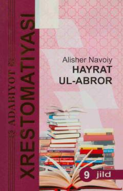

HUAlisher Navoiyning buyuk falsafiy-axloqiy dostonidir.
Alisher Navoiyning mashhur «Xamsa» dostonining birinchi qismi bo'lgan «Hayrat ul-abror» asari insoniyat, axloq, jamiyat va ma'rifat masalalariga bag'ishlangan. Mazkur kitobda muallifning hayot, saltanat va komil inson haqidagi o'lmas falsafiy qarashlari o'z aksini topgan. Asar mumtoz adabiyot ixlosmandlari va keng kitobxonlar ommasiga mo'ljallangan.